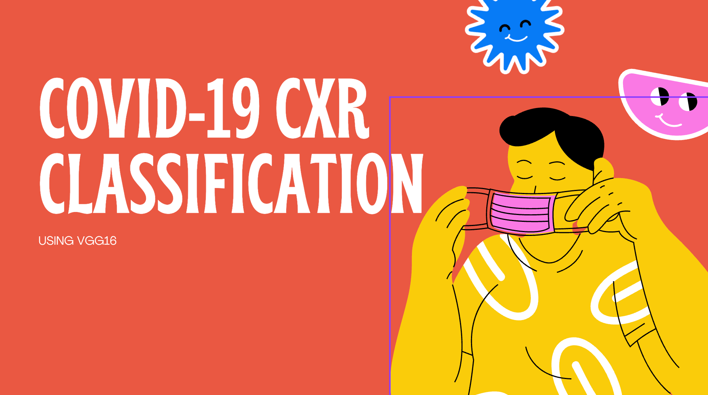
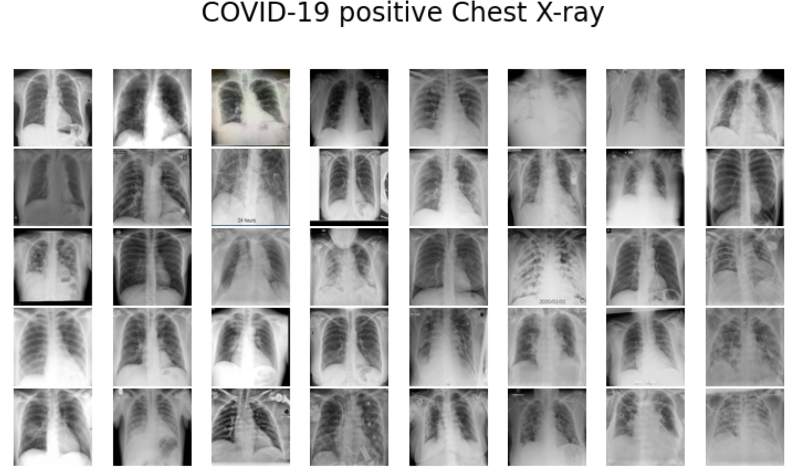
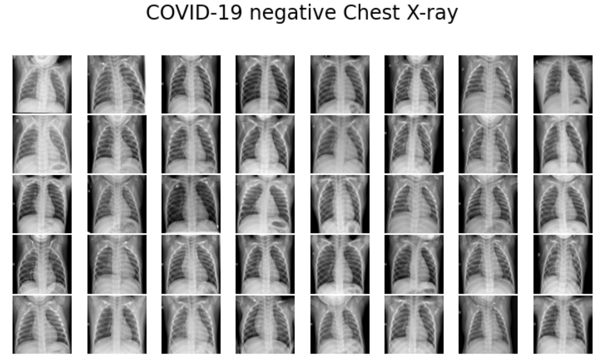
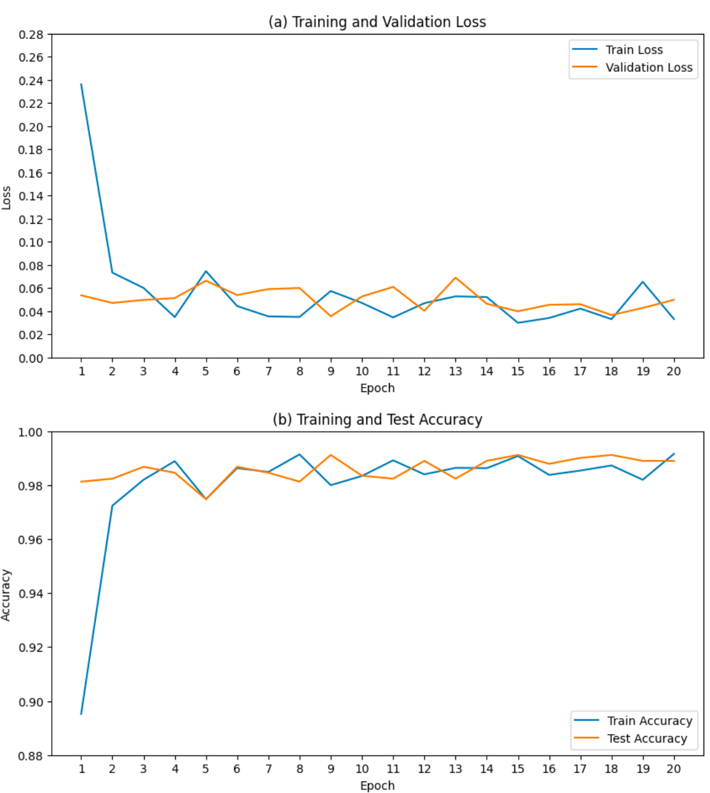
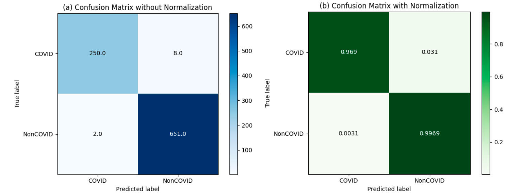
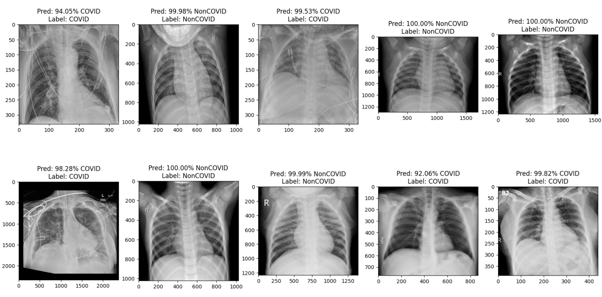

Projects · Computer Vision · Medical Imaging (Research)
COVID-19 Chest X-Ray Classification
A VGG16 binary classifier distinguishing COVID-19 from normal chest X-rays — a research project, not a clinical diagnostic tool.

Problem
Why this matters
Chest X-rays are cheap and fast to capture compared to a PCR test, which made automated triage from CXR images a widely studied question during COVID-19. This project asks a narrow, well-defined version of that question: can a convolutional network reliably tell a COVID-19 chest X-ray apart from a normal one, on a clean, curated public dataset? It's a research/learning exercise, not a validated clinical tool — real-world CXR triage needs far more rigorous clinical validation than a single Kaggle dataset provides.
Method
How it was built
Binary classification (COVID-19 vs. Normal) using a VGG16 convolutional architecture.
Data
Dataset
Kaggle's "Curated Chest X-Ray Image Dataset for COVID-19": 1,281 COVID-19 images and 3,270 Normal images (4,551 total).

Sample COVID-19-positive chest X-rays from the dataset.

Sample COVID-19-negative (normal) chest X-rays from the dataset.
Metrics
Test set performance
99%
Accuracy
99% / 98%
Precision / Recall
99%
F1-score

Training/validation loss and accuracy over 20 epochs.

Confusion matrix on the test set.

Sample test-set predictions with the model's confidence score.
Learnings
Reading the number honestly
A 99% accuracy on a clean, curated, class-imbalanced-but-known dataset is a strong result for the exercise it was — it is not evidence the model would hold up on messier, real-hospital X-rays with different equipment, patient populations, and image quality. The gap between a research benchmark like this and a deployable clinical tool is exactly the kind of distinction worth being explicit about rather than glossing over.